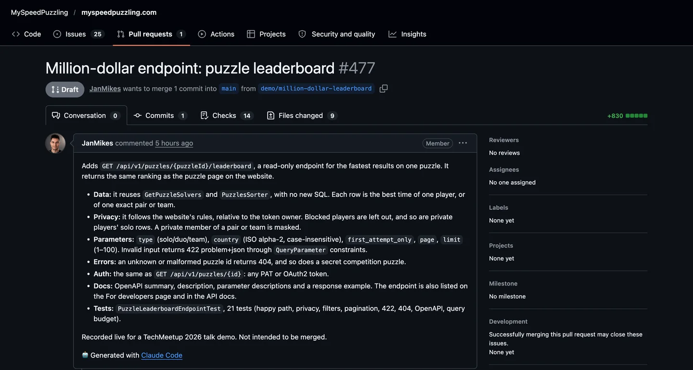
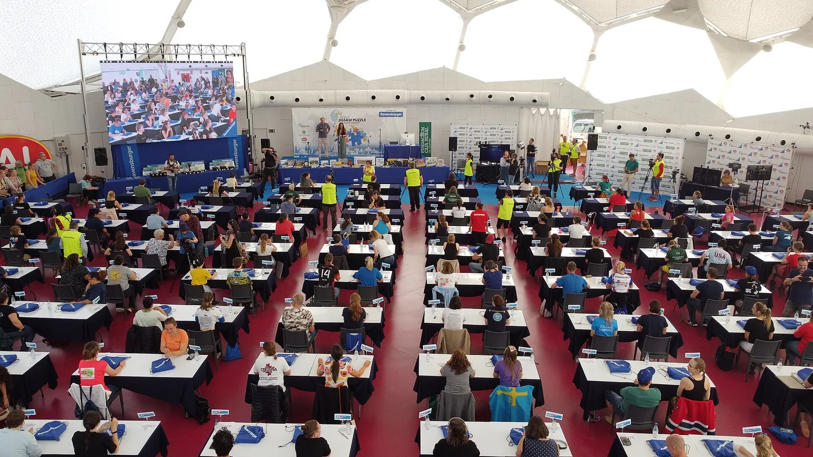
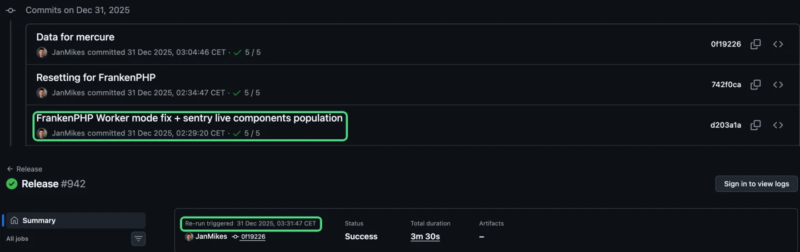

TECHMEETUP CONFERENCE · 20 NOV 2026
BUILDING
MODERN APIS
IN PHP
// 2026 edition — our stack, why I love it, and what it cost me
JAN MIKEŠ · JANMIKES.CZ
LET'S BUILD
AN API.
THE 2026 WAY.
The million-dollar prompt
It works: pull request #477

IT WORKS. 4 min 5 s · CI green ✓
PR #477 · 21 tests · 830 lines · (Opus 5.5, /effort medium) · github.com/MySpeedPuzzling/myspeedpuzzling.com/pull/477
THE INTERESTING
PART ISN'T
THE AI.
it's why it only took four minutes.
EVERYTHING TODAY IS REAL
MYSPEEDPUZZLING.com
the world's largest collection of speed puzzling results and puzzle database
github.com/MySpeedPuzzling/myspeedpuzzling.com
Speed puzzling is a sport

World Jigsaw Puzzle Championship, Valladolid. yes, it's a real sport.
photo: World Jigsaw Puzzle Federation, WJPC 2023 · CC BY-SA 4.0 · via Wikimedia Commons
WJPC 2026 · VALLADOLID
CZECHIA:
WORLD CHAMPIONS
IN TEAMS.
the best team on the planet. from here.
OUR STACK
PHP 8.5 # yes, still Symfony 8 API Platform 5 # without Doctrine CRUD Postgres 18 # 436 hand-written queries Messenger # messages, everywhere FrankenPHP # worker mode
→ not "best practice". our stack — and why I love it.
ACT 1
THE API WAS THE EASY PART
→ 2 years 4 months without an API.
HOUR 1 · PLAIN SYMFONY APP → API
$ composer require api
config/routes/api_platform.php
$routes->import('.', 'api_platform')->prefix('/api');
config/packages/api_platform.php · trimmed
'mapping' => ['paths' => ['%kernel.project_dir%/src/Api']], 'formats' => ['json' => ['application/json']], 'error_formats' => ['problem' => ['application/problem+json']], 'name_converter' => 'serializer.name_converter.camel_case_to_snake_case', 'defaults' => ['stateless' => true], 'oauth' => ['enabled' => true, 'flow' => 'authorizationCode', …],
VOCABULARY · 3 WORDS FOR THE NEXT 30 MINUTES
→ provider & processor are the touchpoint: request data in → your domain → response out
→ by default both point at Doctrine. that default is the tutorial.
WHAT THEY TEACH
YOU IN SCHOOL
the official docs. the courses. every blog post.
LESSON 1 · THE ENTITY IS THE RESOURCE
#[ORM\Entity] #[ApiResource] class Review { … }
→ your table is now your public API. rename a column, break a client.
api-platform.com/docs/symfony · getting started (Book, Review)
LESSON 2 · SERIALIZATION GROUPS
#[ApiResource( normalizationContext: ['groups' => ['read']], denormalizationContext: ['groups' => ['write']], )] class Book { #[Groups(['read', 'write'])] public $name; #[Groups(['write'])] public $author; }
→ one class, many shapes, chosen by strings spread across many files
api-platform.com/docs/core/serialization · "As soon as any of the author's attributes is in the book group, the author will be embedded."
LESSON 3 · LOGIC IN A SAVE() DECORATOR
#[ORM\Entity] #[ApiResource(operations: [ new Post( processor: UserPasswordHasher::class, validationContext: ['groups' => ['Default', 'user:create']], ), ])] class User { private ?string $plainPassword = null; // not a column. lives here anyway. } # services.yaml — wraps Doctrine's persist processor $processor: "@api_platform.doctrine.orm.state.persist_processor"
→ the "register" scenario became a wrapper around save()
api-platform.com/docs/symfony/user
LESSON 4 · …THE DOCS UN-TEACH THEMSELVES
#[ApiFilter(SearchFilter::class, …)]
→ "The legacy method using the ApiFilter attribute is not recommended."
api-platform.com/docs/core/filters
WHY IT HURTS IN YEAR 2
→ tutorials optimise for minute 5. you live in year 5.
⚠ DISCLAIMER
HIGHLY
OPINIONATED.
who knows me, knows: I'm obsessed with CQS.
reads and writes are different models.
3 DECISIONS
FROM DAY 1.
the resource · scenarios · the read model
DECISION 1
THE RESOURCE IS
NOT YOUR ENTITY
0 API resources are entities. every single one is a plain DTO.
THE EXAMPLE ENDPOINT · THE RESOURCE
src/Api/V1/PuzzleLeaderboardResponse.php · PR #477
#[ApiResource(/* operations: the GET route + its provider */)] final class PuzzleLeaderboardResponse { public function __construct( public string $puzzleId, public int $total, public bool $hasMore, /** @var list<PuzzleLeaderboardEntryResponse> */ public array $entries, ) {} }
→ one DTO = one response shape. no entity. no groups.
DECISION 2
SCENARIOS,
NOT CRUD
WHAT THE USER ACTUALLY WANTS
PATCH /competitions/42
{ "status": "published" }
POST /competitions/42/publish
→ nobody has ever opened an app to update an entity
DESIGN FROM THE SCREEN, NOT THE TABLE
solving time"
not INSERT INTO puzzle_solving_time · not PATCH /puzzle_solving_times/{id}
→ name the code after the click, not after the table
→ one command, 3 callers: web form · public API (apps and AI agents) · CLI seeder
WHY NOT CRUD? · "I SOLVED A PUZZLE!" THE CRUD WAY
# the first try of a puzzle (the client has to move the flag itself) GET /puzzle_solving_times?player=me&puzzle=…&first_attempt=true PATCH /puzzle_solving_times/{old} {"first_attempt": false} POST /puzzle_solving_times {"first_attempt": true, "seconds": 2712, …} DELETE /wish_list_items/{id} # solved it, so not on my wishlist any more POST /notifications … # to my followers? private profile? POST /player_badges … # for me? my 3 teammates too? PATCH /puzzle_statistics/{id} … # the average time changed
→ 7 calls. 0 transactions. the rules live in the mobile app.
→ crash after call 2? your first try is gone. two phones? two first tries.
"I SOLVED A PUZZLE!" · THE SCENARIO WAY
POST /api/v1/me/solving-times
{ "puzzle_id": "…", "time": "45:12", "first_attempt": true }
- same key = same save
- no accidental twin
- the round must be public
- one first try per puzzle (the flag moves)
- under 100 pieces/min
- teammates resolved
- badges for every teammate
- XP
- puzzle statistics
- time predictions
- duplicate scan
- notify followers (privacy-aware)
- off the wishlist
→ 1 call. the rules live where every client has to pass.
src/MessageHandler/AddPuzzleSolvingTimeHandler.php · the PuzzleSolved event, 5 listeners
DECISION 3
THE READ MODEL
ask the database the question the screen asks.
PREDICT
GET /me/results
for our top puzzler
2,327 results · 2,159 puzzles · about 2 MB of JSON
how many SQL queries would classic Doctrine CRUD fire?
MEASURED · SAME DB, SAME DATA
Doctrine CRUD ████████████████████████████ 9,210 queries 9,559 entities in memory · in ONE request read model ▏ 7 queries 0 entities · 108 ms, whole request
→ the REST-purist version: relations as links, the client does the joins. 4,400+ HTTP requests for one screen.
PUTTING IT TOGETHER · THE LAYERS
READ
WRITE
READ
WRITE
SYNTAX SUGAR · THE GOOD KIND
THE MAGIC WE WANT
- routing from uriTemplate
- security expressions per operation
- JSON body → typed Input DTO
- validation → 422 with field paths
- query parameters: typed, validated
- DTO → JSON, the right status codes
- errors as problem+json
- OpenAPI docs, generated, can't drift
- the resource: the JSON shape
- the provider: which query
- the processor: which command
- the handler: the business rules
- the SQL
no Request. no Response. plain PHP objects in, plain objects out.
→ magic for the boring HTTP, explicit for the business. the best of both worlds.
END TO END · READ ① THE RESOURCE
src/Api/V1/MyCollectionsResponse.php
#[ApiResource(operations: [
new Get(
uriTemplate: '/v1/me/collections',
security: "is_granted('ROLE_OAUTH2_COLLECTIONS:READ') or …",
provider: MyCollectionsResponseProvider::class,
),
])]
final class MyCollectionsResponse
{
public function __construct(
public string $playerId,
public int $count,
/** @var list<CollectionResponse> */
public array $collections,
) {}
}
END TO END · READ ② THE PROVIDER
src/Api/V1/MyCollectionsResponseProvider.php
/** @implements ProviderInterface<MyCollectionsResponse> */
final readonly class MyCollectionsResponseProvider implements ProviderInterface
{
public function __construct(private GetPlayerCollections $getPlayerCollections) {}
public function provide(Operation $operation, …): MyCollectionsResponse
{
$playerId = /* the logged-in player, from Security */;
$collections = $this->getPlayerCollections->byPlayerId($playerId);
$responses = array_map(
fn (CollectionOverview $c) => new CollectionResponse(/* id, name, … */),
$collections,
);
return new MyCollectionsResponse($playerId, count($responses), $responses);
}
}
END TO END · READ ③ THE QUERY
src/Query/GetPlayerCollections.php
readonly final class GetPlayerCollections
{
public function __construct(private Connection $database) {}
/** @return list<CollectionOverview> */
public function byPlayerId(string $playerId): array
{
$query = <<<SQL
SELECT id, name, description, visibility
FROM collection
WHERE player_id = :playerId
ORDER BY created_at DESC
SQL;
$rows = $this->database->executeQuery($query, ['playerId' => $playerId])
->fetchAllAssociative();
return array_map(fn (array $row) => new CollectionOverview(/* row → typed */), $rows);
}
}
END TO END · WRITE ① THE INPUT
src/Api/V1/CreateCollectionInput.php
#[ApiResource(operations: [
new Post(
uriTemplate: '/v1/me/collections',
security: "is_granted('ROLE_OAUTH2_COLLECTIONS:WRITE') or …",
output: CollectionResponse::class,
processor: CreateCollectionProcessor::class,
),
])]
final class CreateCollectionInput
{
#[Assert\NotBlank]
#[Assert\Length(max: 100)]
public string $name = '';
#[Assert\Length(max: 500)]
public ?string $description = null;
}
→ body validation on the input. invalid? a 422 before any of my code runs.
END TO END · WRITE ② THE PROCESSOR
src/Api/V1/CreateCollectionProcessor.php
/** @implements ProcessorInterface<CreateCollectionInput, CollectionResponse> */
final readonly class CreateCollectionProcessor implements ProcessorInterface
{
public function process(mixed $data, Operation $operation, …): CollectionResponse
{
$playerId = /* the logged-in player, from Security */;
if (/* no active membership */) {
throw new AccessDeniedHttpException('Active membership is required');
}
$collectionId = Uuid::uuid7()->toString();
$this->messageBus->dispatch(new CreateCollection(
$collectionId, $playerId, $data->name, /* description, visibility */
));
return new CollectionResponse($collectionId, /* + the input fields */);
}
}
END TO END · WRITE ③ COMMAND → HANDLER
src/MessageHandler/CreateCollectionHandler.php
#[AsMessageHandler]
readonly final class CreateCollectionHandler
{
public function __invoke(CreateCollection $message): void
{
$player = $this->playerRepository->get($message->playerId);
if ($this->collectionRepository->findByNameAndPlayer(/* name, player */) !== null) {
throw new CollectionAlreadyExists(/* the existing id */);
}
$this->collectionRepository->save(new Collection(
Uuid::fromString($message->collectionId), $player, $message->name, /* … */
));
}
}
→ the same handler serves the website form, the API and the CLI
TEAM A
THIS WAS THE
CLEAN WAY.
input → processor → command → handler → response. five classes for one write.
or… even more pragmatic? useful for pure APIs.
TEAM B · THE PRAGMATIC WAY
Fantasy Academy · api/src/Message/Subscription/CreateCheckoutSession.php
#[Post( uriTemplate: '/subscription/checkout', output: CheckoutSessionResponse::class, messenger: 'input', )] readonly final class CreateCheckoutSession { public function __construct( #[Assert\Choice(['monthly', 'yearly'])] public string $plan, ) {} }
→ no processor. no mapping. the message is the resource.
TEAM B · THE HANDLER RETURNS THE RESPONSE
Fantasy Academy · api/src/MessageHandler/Subscription/CreateCheckoutSessionHandler.php
#[AsMessageHandler]
readonly final class CreateCheckoutSessionHandler
{
public function __invoke(CreateCheckoutSession $message): CheckoutSessionResponse
{
$user = $this->userRepository->getById(/* the logged-in user */);
/* … find or create the Stripe customer, pick the price for $message->plan */
$session = $this->stripeClient->createCheckoutSession(/* customer, price, urls, user */);
return new CheckoutSessionResponse(
checkoutUrl: $session->url,
sessionId: $session->sessionId,
);
}
}
→ the return value is the response. API Platform reads it from Messenger's HandledStamp.
WHAT DO
YOU THINK?
A: more files, a decoupled contract · B: less code, the command is the contract
hands up: team A … team B …
MY RULE · OPINION
OWN EVERY CLIENT?
THE MESSAGE CAN BE
THE CONTRACT.
→ strangers integrate with you? put a layer between.
Fantasy Academy: one frontend, same repo → B. MySpeedPuzzling: public API, 3 callers → A.
ACT 2
PRODUCTION-
GRADE
validation · domain errors · docs · security · speed
FILTERING + VALIDATION FOR FREE
src/Api/V1/PuzzleLeaderboardResponse.php · PR #477
new Get(
uriTemplate: '/v1/puzzles/{puzzleId}/leaderboard',
parameters: [
'type' => new QueryParameter(
constraints: [new Choice(['solo', 'duo', 'team'])],
),
'country' => new QueryParameter(castFn: /* lowercase */),
'limit' => new QueryParameter(
schema: ['type' => 'integer', 'maximum' => 100, 'default' => 20],
constraints: [new Range(min: 1, max: 100)],
),
],
)
→ declared, not coded. and it lands in the OpenAPI docs.
→ ?limit=1000 → 422 problem+json: "limit: This value should be between 1 and 100."
PAGINATION · WHERE DO PAGE AND LIMIT COME FROM?
GET /api/v1/puzzles/{puzzleId}/leaderboard?page=2&limit=20
src/Api/V1/PuzzleLeaderboardResponseProvider.php · PR #477
public function provide(Operation $operation, …): PuzzleLeaderboardResponse
{
// declared as QueryParameter on the resource: validated, cast to int, defaults 1 / 20
$page = $operation->getParameters()->get('page')->getValue(); // 2
$limit = $operation->getParameters()->get('limit')->getValue(); // 20
$attempts = $this->getPuzzleSolvers->soloByPuzzleId($puzzleId); // the website's query
$rows = $this->puzzlesSorter->groupPlayers($attempts); // ranked in PHP
$offset = ($page - 1) * $limit; // 20
$entries = array_slice($rows, $offset, $limit); // rows 21–40
return new PuzzleLeaderboardResponse(entries: $entries, total: count($rows), /* page, limit */
hasMore: $offset + count($entries) < count($rows));
}
→ { "page": 2, "limit": 20, "total": 37, "has_more": false, "entries": [ …17 ] }
BODY VALIDATION · WHEN ATTRIBUTES AREN'T ENOUGH
src/Api/V1/CreateSolvingTimeInput.php
final class CreateSolvingTimeInput
{
#[Assert\Regex('/^\d{1,2}:\d{2}(:\d{2})?$/', message: 'HH:MM:SS or MM:SS')]
public string $time = '';
#[Assert\Positive]
public ?int $piecesPlaced = null; // an unfinished competition result
#[Assert\Callback]
public function validateTime(ExecutionContextInterface $context): void
{
if ($this->piecesPlaced === null && trim($this->time) === '') {
$context->buildViolation('This value should not be blank.')
->atPath('time')->addViolation();
}
}
}
→ rules across fields live on the input too. same 422, same violations format.
THE LIMIT OF VALIDATION
SOME RULES CAN'T
BE CHECKED AT
THE DOOR
"one first try per puzzle" needs the database. and a race beats any form.
THROWN IN THE DOMAIN
src/MessageHandler/AddPuzzleSolvingTimeHandler.php
#[AsMessageHandler]
readonly final class AddPuzzleSolvingTimeHandler
{
public function __invoke(AddPuzzleSolvingTime $message): void
{
if ($message->firstAttempt) {
$firstTry = $this->firstTryAssessor->assess(/* player, puzzle */);
if ($firstTry->blocks($message->firstTryResolution)) {
throw new FirstTryAlreadyTaken($firstTry);
}
}
/* … save the time, raise PuzzleSolved */
}
}
→ no HTTP. no status code. just the business saying no.
TRANSLATED AT THE EDGE
src/Api/V1/CreateSolvingTimeProcessor.php
// API door · CreateSolvingTimeProcessor::process()
try {
$this->messageBus->dispatch(new AddPuzzleSolvingTime(/* … */));
} catch (HandlerFailedException $exception) {
if ($exception->getPrevious() instanceof FirstTryAlreadyTaken) {
throw FirstTryConflictResponse::from(/* … */); // → 422 + a helpful detail
}
/* other domain errors… */
}
// web door · PuzzleAddController: the SAME exception
if ($realException instanceof FirstTryAlreadyTaken) {
$form->addError(new FormError(/* translated message */)); // → a red form error
}
→ one domain exception. two translations. each door speaks its own language.
THE PRAGMATIC VARIANT · NO TRY/CATCH
#[ApiResource(operations: [
new Post(
uriTemplate: '/v1/me/solving-times',
messenger: 'input', // API Platform dispatches… and unwraps HandlerFailedException
exceptionToStatus: [
FirstTryAlreadyTaken::class => 422,
],
),
])]
final class AddPuzzleSolvingTime { /* the command is the resource, as team B */ }
// or once for the whole API · config/packages/api_platform.php
'exception_to_status' => [FirstTryAlreadyTaken::class => 422],
→ 422 application/problem+json { "detail": "the exception's message" }
→ zero translation code. the price: one generic error, the exception's message is the API.
OPENAPI · DOCS THAT CAN'T LIE
src/Api/V1/CreateSolvingTimeInput.php
new Post(
uriTemplate: '/v1/me/solving-times',
openapi: new OpenApiOperation(
description: 'Linking the time to an event (all optional): round_id …',
parameters: [new Parameter(name: 'Idempotency-Key', in: 'header')],
responses: [
'422' => new OpenApiResponse(description: 'a first attempt already recorded, …'),
'404' => new OpenApiResponse(description: 'round_id unknown, nothing is saved'),
],
),
)
→ schemas come from the DTOs. the edge cases live next to the code that throws them.
ONE CODEBASE · 3 KINDS OF CALLER
OAuth2 apps scopes → roles ─┐ personal tokens Authorization: Token msp_pat_… ─┼─▶ ApiUser ─▶ same commands AI agents internal API, ~90 scenario endpoints ─┘
→ who you are is a firewall problem. what you do is a command.
SECURITY ① WHO ARE YOU?
config/packages/security.php
'firewalls' => [
'api' => [
'pattern' => '^/api/v1/',
'stateless' => true, // no session, no cookie
'oauth2' => true, // league/oauth2-server-bundle
'custom_authenticators' => [PatAuthenticator::class],
],
],
'access_control' => [
['path' => '^/api/v1/me', 'roles' => [PatUser::ROLE, OAuth2User::ROLE,
['path' => '^/api/v1/players/.*/results', 'roles' => [OAuth2Scope::ResultsRead->role(),
],
→ scopes become roles. a whole path is closed even if an endpoint forgets.
SECURITY ② WHAT MAY YOU DO?
// 1. the operation (#[ApiResource]): is this token allowed here at all?
security: "is_granted('ROLE_OAUTH2_COLLECTIONS:WRITE') or …",
// 2. the processor: the business rule → 403
if (/* no active membership */) {
throw new AccessDeniedHttpException('Active membership is required');
}
// 3. the provider: be nice to the database → 429
if (!$this->apiPuzzleSearchLimiter->create($key)->consume()->isAccepted()) {
throw new TooManyRequestsHttpException($retryAfterSeconds);
}
→ token scope, business permission, rate limit. three questions, three places.
MIDPOINT BREAK
REMEMBER THE
WORLD CHAMPIONS?
let's talk about how fast they are.
WORLD RECORD MATH
SPEAKING OF
SPEED.
"PHP IS SLOW."
— every conference since 2008
FRANKENPHP
WORKER MODE
boot kernel ─▶ build container ─▶ routing # once
▼
request ─▶ your code ─▶ response ─▶ reset
request ─▶ your code ─▶ response ─▶ reset
request ─▶ …
PREDICT
GET /api/v1/me
classic 23.6 ms · 167 req/s
worker ?
REVEAL · p50 LATENCY
classic ████████████████████████ 23.6 ms worker ███ 3.0 ms
167 → 2,368 requests per second
PRODUCTION · LAST 30 DAYS · ~10M REQUESTS
→ that's worker mode. in production. right now.
PHP is alive

PHP in 2026: "dead" since 2008. 23 ms p50.
ACT 3
LIVING
WITH IT
measure · alert · fix in an afternoon
OBSERVABILITY
MEASURE EVERYTHING.
ALERT ON ALMOST NOTHING.
THE ONE PERFORMANCE ALERT
p90(span.duration) > 500 ms for 30 min
EXCLUDING
GET result_image # slow by design
POST stripe_webhook # Stripe's timing
GET sitemap # bots
GET checkout_success # waits for Stripe
→ every alert must be actionable at 3 a.m.
SEP 2026 · SENTRY WEB-B4
"THE SEARCH
FEELS SLOW."
every header search: 135 ms on average. not broken. just… meh.
THE TRAP I WALKED INTO
src/Query/SearchPuzzle.php
WHERE name ILIKE :searchFullLikeQuery -- trigram index ✓ (since January) OR identification_number ILIKE :searchFullLikeQuery -- no index OR ean ILIKE :eanSearchFullLikeQuery -- no index
→ one OR arm without an index = a full table scan. every search.
THE FIX · ONE MIGRATION
migrations/Version20260918131133.php · commit 6500b1a88
CREATE INDEX custom_puzzle_identification_number_trgm
ON puzzle USING GIN (identification_number gin_trgm_ops);
CREATE INDEX custom_puzzle_ean_trgm
ON puzzle USING GIN (ean gin_trgm_ops);
AND THE TEST DIDN'T MOVE
tests/Controller/Api/V1/PuzzleSearchEndpointTest.php · untouched by the fix
public function testQueryMatchesIdentificationNumberAndIsAccentInsensitive(): void
{
$browser = $this->createApiClient();
/* … authenticate with a personal access token */
$browser->request('GET', '/api/v1/puzzles', ['query' => 'RB-500-001']);
$this->assertResponseIsSuccessful();
$this->assertSame([PuzzleFixture::PUZZLE_500_01], $this->ids(/* the response */));
}
→ the test pins the request and the response. not the implementation.
→ so I can change exactly one thing underneath, and know nothing else moved.
WHAT TO LOG · AI AGENTS ARE API CLIENTS TOO
$ curl -X POST …/internal-api/series/{seriesId}/publish [internal_api_audit] Internal API write: POST /internal-api/series/…/publish answered 200 { actingPlayerId, targetIds, createdId }
→ ~90 scenario endpoints, an OpenAPI file, and an audit log
REMEMBER THE EXAMPLE ENDPOINT? · WHY IT TOOK 4 MINUTES
→ a good architecture for humans is a good prompt for agents
SPREAD
THE WORD.
the few devs I showed this to hated entities as resources. none of them knew a resource can be a plain PHP object.
API Platform is far more powerful than its tutorials.
maybe the most underrated reason to love PHP APIs.
THANK YOU
MySpeedPuzzling
slides on janmikes.cz
BONUS · THE WAR STORY
BUT.
NOVEMBER 2025 · A BIG CINEMA CHAIN HERE
"The website logged fans into other people's accounts."
CineStar, the Traitors finale ticket rush · nafilmu.cz, refresher.cz (paraphrased and translated)
→ I laughed. how can that happen to a company that size?
31 Dec 2025: the commits and the deploy that went live
WORKER MODE: ON · GOOD NIGHT

what could possibly go wrong?
github.com/MySpeedPuzzling/myspeedpuzzling.com · commits on 31 Dec 2025 · actions run 20610258850, attempt 2
The inbox on New Year's morning

1 JAN 2026 · 50 unread
One sign-on for everyone
perfect single sign-on. one sign-on. for everyone.
THE LESSON
worker mode doesn't make your code stateful. it reveals it. → reset at the START of every request → 52 services implement ResetInterface → stateless: true, everywhere → the rule lives in CLAUDE.md
WHO KEPT
THE USER
IN MEMORY?
a third-party bundle.
BONUS
THE DECISION
I'D UNDO
WHO KEPT THE USER IN MEMORY?
THE AUTH0
BUNDLE.
I ran my own fork. and my bug report?
auth0/symfony #227 "causes authentication leak in worker mode" opened 31 Dec 2025, 14:40 # the same afternoon comments 0 releases 5.7 · 5.8 · 5.9 · 6.0-beta # none with the fix status OPEN · day 324
The wet-ink signature

2026: getting my own users' password hashes back